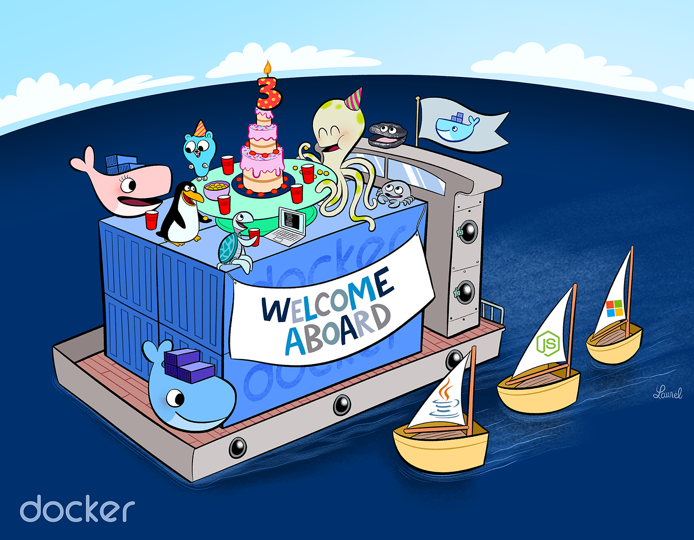

我的个人博客迁移到Docker啦
在 2019-05-10 Friday 发布于 DevOps 分类 • 2 min read
2019年5月10日起, 我的个人博客 - https://www.EWhisper.cn 正式运行在docker里边了! 
我把相关的源码, Docker镜像分别上传到了GitHub和Docker Hub. 地址如下:
- GitHub: https://github.com/east4ming/my-tencentyun-nginx
- Docker Hub: https://cloud.docker.com/u/caseycui/repository/docker/caseycui/my-tencentyun-nginx

网站架构¶
数据流向¶
我的博客网站的架构其实非常非常简单. 说白了, 就是NGINX + 静态页面. (对的, 你没有看错, 我的网站是个全静态网站, 没有动态页面).
之前的数据流向大概是:
用户 -> 域名 -> DNS -> 腾讯云主机外网IP -> 腾讯云主机内网IP -> NGINX 80和443端口 (NGINX作为Web Server, 后端没有App Server和DB)
现在加了一层Docker, 多了一层 主机 -> docker sdn的转发. 如下:
用户 -> 域名 -> DNS -> 腾讯云主机外网IP -> 腾讯云主机内网IP -> Docker SDN端口映射(443指向docker的443, 80之下那个docker的80) -> Docker的NGINX容器的 80和443端口
网站架构¶
从头开始说起吧, 我的博客是一个静态站点.
- 我写博文是先通过MarkDown 写.md格式的文本.
- 然后通过静态站点生成器(static site generator) -- Pelican (我用的这个不算最主流的, 主流的如: Hexo等)将我的MarkDown 文本, 根据Pelican中定义的主题, 渲染为一个相应风格HTML文件.
- 整个站点, 包括以下内容都是一个个的HTML页面.
- Index页面
- about 和 contact 页面
- 标签 类别页面
- RSS 订阅页面
- 每一篇博文
- 整个网站呢, 实际上就是:
- HTML(和CSS JS)
- 静态内容(如: 图片, 图片目前部分在本地, 部分调用图床外链如又拍 七牛 CND等)
- 其他功能通过插件(也是JS, 外部的JS)实现, 如:
- 评论框 (国内可能看不见, 被屏蔽了....)
- 转发条
- ...
- Pelican 生成的所有的静态站点内容, 都全部通过rsync等工具同步到我的腾讯云主机的
/usr/share/nginx/html目录下, 并启动NGINX, 配置80, 443端口监听并处理静态内容就可以了.- 以前, 我是直接通过
systemctl在云主机上启动的NGINX - 现在, 是通过docker启动的NGINX镜像.
- 以前, 我是直接通过
容器化简单步骤¶
因为我这个只涉及NGINX的容器化, 而且NGINX有官方提供的标准镜像. 所以容器化非常简单, 最简单的方式, 就是直接启动NGINX容器, 如下:
直接启动NGINX容器¶
其实, 直接启动NGINX容器就好了, 你只需要把以下内容挂载卷或者暴露出来:
- 挂载卷
- NGINX相关配置(包括:
/etc/nginx下面的nginx.conf文件, conf.d和default.d文件夹) - 静态站点文件(pelican生成的, 放到
/usr/share/nginx/html的文件) - 证书文件(向云供应商或证书供应商申请到的证书, 放到
/etc/pki/nginx文件夹)
- NGINX相关配置(包括:
- 暴露端口
- 80
- 443
命令如下:
sudo docker run --name my-tencentyun-nginx -d \
-p 80:80 -p 443:443 \
-v /etc/nginx/nginx.conf:/etc/nginx/nginx.conf \
-v /etc/nginx/conf.d:/etc/nginx/conf.d \
-v /etc/nginx/default.d:/etc/nginx/default.d \
-v /usr/share/nginx/html:/usr/share/nginx/html \
-v /etc/pki/nginx:/etc/pki/nginx:ro \
nginx
上面的命令就不细说了, 很容易理解的. -p是暴露端口, -v是把主机的磁盘挂载到容器里, -d是后台运行.
启动后, 你的NGINX docker容器就会自动下载并启动运行, 你的网站也可以正式对外服务啦.
其他容器化方式¶
自己本地或单机玩玩, 上边的容器化方式完全够用了. 但是如果我们有以下需求:
- 多人合作. 需要封装成新的镜像, 将镜像提供给别人使用.
- 更好地编排与管理. 管理一个项目, 需要启动多少个web server, 多少个app server, 多少个db. 相互之间如何交互.
那么久需要其他的容器化方式.
Dockerfile 封装镜像¶
适用场景
这种其实是团队, 公司, 或生产上推荐的一种方式. 开发负责写代码, 编译代码, 写Dockerfile, 构建镜像. 并把镜像上传到共有或私有的镜像仓库. 然后另外的团队角色, 如: 测试, 运维, 再从仓库中拉取镜像并启动, 测试, 上线.
这也实现了docker的最大优势, 他们的slogan: "build, share and run any application, anywhere".
能做到这一点, 也是因为OS+语言+组件+应用包, 整个打包成了一个镜像, 实现了环境的一致性.
还有一个有点, 因为有Dockerfile, 也方便进行追溯和理解镜像. (如果只是一个镜像的话, 很难知道镜像是怎么做出来的).
步骤
-
创建个项目, 本地文件夹是my-tencentyun-nginx, GitHub是: https://github.com/east4ming/my-tencentyun-nginx
-
将相关源码和站点文件放到该目录中(配置文件, 站点文件, 证书)
 注意:
注意: 证书key包含重要的私密信息, 千万不要上传到公网上!
-
创建
Dockerfile -
构建镜像:
sudo docker build -t caseycui/my-tencentyun-nginx . -
(可选) 推送镜像到Docker Hub:
sudo docker push caseycui/my-tencentyun-nginx(我这边是Docker Hub直接oauth连接到Github, 我的对应的Github仓库代码有更新, 就会自动构建) -
运行镜像:
sudo docker run --name my-tencentyun-nginx -v /etc/pki/nginx:/etc/pki/nginx:ro -d -p 80:80 -p 443:443 caseycui/my-tencentyun-nginx
Dockerfile 如下:
最简单的Dockerfile, 就是在nginx镜像的基础上, 把我们自己的nginx配置文件和静态站点文件复制进去, 生成一个新镜像.
FROM nginx:latest
COPY pelican-output /usr/share/nginx/html
COPY nginx.conf /etc/nginx/nginx.conf
COPY default.d /etc/nginx/default.d
#COPY conf.d /etc/nginx/conf.d # 这边注释掉, 是因为这个目录里还没有内容
简单容器编排工具 - docker compose¶
适用场景
docker compose是docker官方出品的容器编排工具, 简单易用. 小规模用用还是挺舒服的. 大规模, 企业级的现在都是使用Kubernetes.
我这里用docker compose其实是杀鸡用牛刀了, 没啥必要. 它适用于哪种场景呢?
比如, 我一个项目要上线, 包括: web server, app server, db. 那么这时候docker compose就很合适了. 通过它来编排这3类容器, 使它们相互协作和交互.
docker-compose是通过docker-compose.yaml来定义这些编排内容的. 示例如下:
一个web容器, 一个redis容器. 挂载哪些卷, 怎么编译...
version: '3'
services:
web:
build: .
ports:
- "5000:5000"
volumes:
- .:/code
- logvolume01:/var/log
links:
- redis
redis:
image: redis
volumes:
logvolume01: {}
步骤:
创建docker-compose.yaml:
web:
image: nginx
volumes:
- ./nginx.conf:/etc/nginx/nginx.conf
- ./default.d:/etc/nginx/default.d
- ./conf.d:/etc/nginx/conf.d
- ./pelican-output:/usr/share/nginx/html
- /etc/pki/nginx:/etc/pki/nginx:ro
ports:
- "80:80"
- "443:443"
command: [nginx, '-g', 'daemon off;']
运行: sudo nohup docker-compose up &
查看状态和日志¶
查看状态: sudo docker ps <container name>
查看日志: sudo docker logs <container name>